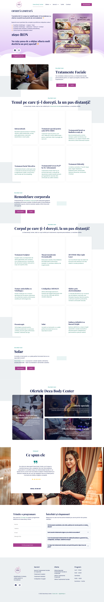
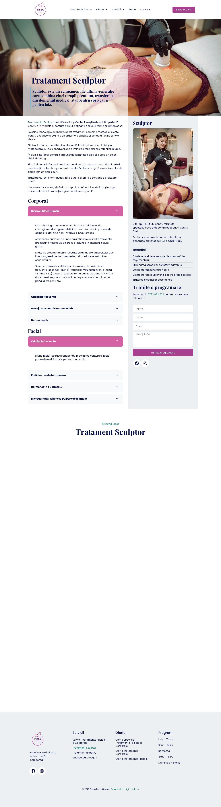

01
Clonă fidelă
Pixel-perfectIndistinctă vizual de site-ul actual — același layout, culori, fonturi și structură. Zero surprize pentru vizitatorii obișnuiți. Câștigi doar viteza și mentenanța Astro, fără nicio schimbare de aspect.
Fiecare variantă e construită cu conținutul și imaginile reale, pe două pagini: homepage și o pagină de serviciu (Tratament Sculptor). Click pe „Deschide live" ca să navighezi real prin fiecare.
Indistinctă vizual de site-ul actual — același layout, culori, fonturi și structură. Zero surprize pentru vizitatorii obișnuiți. Câștigi doar viteza și mentenanța Astro, fără nicio schimbare de aspect.
Păstrează identitatea și structura, dar cu execuție mult mai îngrijită: spațiere consistentă, carduri unitare cu hover elegant, butoane pill, caseta de preț premium, secțiuni alternante cu tentă lavandă. Recognoscibil ca același brand, dar vizibil mai bun.
Aspect complet nou, premium și editorial: navy profund + auriu, neutre calde crem, mult spațiu alb, tipografie serif elegantă, carduri cu index 01–09, magenta doar pe CTA. Același conținut, dar arată clar mai „scump" și mai actual.
Capturile site-ului live existent, pentru comparație directă.

